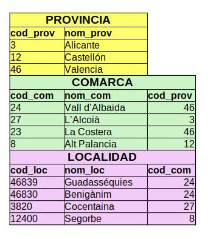
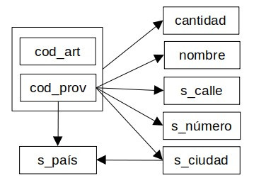
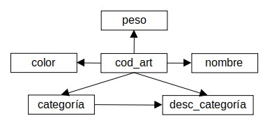
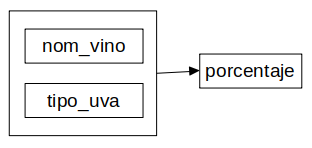
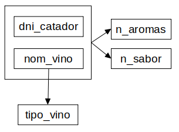
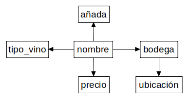
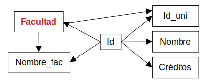

Actividades Boletín B - Soluciones
El enunciado es común a todos ellos: normaliza a 3FN las relaciones.
Ejercicio 1. Localidades
Se desea almacenar información de Provincias, Comarcas y Localidades.
Restricciones:
- Una localidad no puede estar en más de una comarca.
- Una comarca no puede estar en más de una provincia.
Modelo lógico:
-
PROVINCIA (cod_prov, nom_prov)
CP: cod_prov
COMARCA (cod_com, nom_com, cod_prov*)
CP: cod_com
CAj: cod_prov → PROVINCIA (cod_prov)
VNN: cod_prov
LOCALIDAD (cod_loc, nom_loc, cod_com*)
CP: cod_loc
CAj: cod_com → COMARCA (cod_com)
VNN: cod_com
Solución
1FN
Como ninguna de las relaciones anteriores tiene atributos multivaluados, compuestos o derivados, todas ellas están en 1FN.
2FN
Hay que eliminar las DF parciales. Como ninguna de las relaciones anteriores tiene claves compuestas, todas ellas están en 2FN.
3FN
Hay que eliminar las DF transitivas. Para ello se puede realizar un diagrama de DF para cada relación y estudiar tabla por tabla, aunque en este caso resulta evidente que tanto los nombres como las claves foráneas incluidas no tienen dependencias transitivas. Ya está todo en 3NF. De todos modos, podemos comprobarlo.
-
PROVINCIA (cod_prov, nom_prov)
cod_prov → nombre
No hay DF transitivas, la tabla es 3FN.
COMARCA (cod_com, nom_com, cod_prov)
cod_com → cod_prov, nombre
No hay DF transitivas, la tabla es 3FN.
LOCALIDAD (cod_loc, nom_loc, cod_com)
cod_loc → cod_com, nombre
No hay DF transitivas, la tabla es 3FN.
Respecto a las restricciones, ya se cumplen por la propia definición de las tablas. Las claves foráneas indican precisamente relaciones 1:N donde cada localidad está en una comarca y cada comarca en una provincia, así que no hay nada que modificar al respecto.
En resumen, el enunciado proporciona un modelo relacional completamente definido y normalizado hasta 3FN.
Rellenando con algunos datos de ejemplo se puede ver como quedaría:

Ejercicio 2. Proveedores
En el siguiente modelo se representan los artículos exportados por una serie de proveedores.
Modelo lógico:
-
ARTÍCULO (cod_art, nombre, categoría, color, peso, desc_categoría)
CP: cod_art
PROVEEDOR (cod_prov, cod_art, nombre, {correoelec}n, cantidad, sede.calle, sede.número, sede.ciudad, sede.país, {representante, nombre_rep}n)
CP: {cod_prov, cod_art}
CAj: cod_art → ARTÍCULO (cod_art)
Solución
1FN
En Proveedor movemos los campos multivaluados a sus respectivas tablas y separamos los compuestos, aunque realmente solo el representante está expresado como tal, la sede simplemente comparte un prefijo que ayuda a la comprensión del atributo. En ningún caso parece correcta la interpretación de que un representante trabaje para varios proveedores o el correo electrónico sea compartido, así pues las nuevas tablas se implementan con una debilidad de existencia, no de identificación.
Existen varias soluciones; con la información disponible solo sabemos que el correo es multivaluado y tendría su propia tabla, pero vamos a suponer, ya que parece más lógico, que la expresión del modelo no era adecuada y los correos electrónicos corresponden a los representantes y no al proveedor en sí mismo. Suponemos, además, que cada representante tiene un solo correo, aunque esto no es en absoluto lo que el modelo estaba expresando.
Ante un esquema así no quedaría más remedio que consultar las fuentes o al cliente para corroborar cuál es la opción correcta. En caso de que los correos correspondiesen a los representantes pero pudieran tener más de uno, se moverían a una tabla propia con los representantes como clave ajena.
-
PROVEEDOR (cod_prov, cod_art, nombre, cantidad, s_calle, s_número, s_ciudad, s_país)
CP: {cod_prov, cod_art}
CAj: cod_art → ARTÍCULO (cod_art)
REPRESENTANTE (cod_rep, nombre_rep, correoelec, cod_prov*)
CP: cod_rep
CAj: cod_prov → PROVEEDOR (cod_prov)
VNN: cod_prov
2FN
Artículo y Representante tienen clave simple, ya están en 2FN. Comprobamos el diagrama de DF de Proveedor:
Tabla Proveedor:

Con esto vemos que solo la cantidad depende de la clave entera. Haremos lo siguiente:
- En Proveedor dejamos la información que depende del mismo, con la clave simple cod_prov
- Creamos una relación PEDIDO con la clave compuesta {cod_prov, cod_art} y movemos allí la cantidad
-
PROVEEDOR (cod_prov, nombre, s_calle, s_número, s_ciudad, s_país)
CP: cod_prov
PEDIDO (cod_prov, cod_art, cantidad)
CP: {cod_prov, cod_art}
CAj: cod_prov → PROVEEDOR (cod_prov)
CAj: cod_art → ARTÍCULO (cod_art)
3FN
- En Pedido no hay DF transitivas.
- En Proveedor, se puede ver en el diagrama anterior que s_país depende transitivamente de la clave a través de s_ciudad, así que creamos una tabla de ciudades y movemos allí el país.
- Si comprobamos el diagrama de DF de Artículo se ve fácilmente que la desc_categoría depende transitivamente a través de la categoría, con lo que se puede mover también a una tabla de categorías.
Tabla Artículo:

Así pues el conjunto final de tablas 3FN es:
-
CATEGORÍA (nombre_categoría, desc_categoría)
CP: nombre_categoría
ARTÍCULO (cod_art, nombre, categoría, color, peso)
CP: cod_art
CAj: categoría → CATEGORÍA (nombre_categoría)
CIUDAD (nombre_ciudad, país)
CP: nombre_ciudad
PROVEEDOR (cod_prov, nombre, s_calle, s_número, s_ciudad)
CP: cod_prov
CAj: s_ciudad → CIUDAD (nombre_ciudad)
REPRESENTANTE (cod_rep, nombre_rep, correoelec, cod_prov*)
CP: cod_rep
CAj: cod_prov → PROVEEDOR (cod_prov)
VNN: cod_prov
PEDIDO (cod_prov, cod_art, cantidad)
CP: {cod_prov, cod_art}
CAj: cod_prov → PROVEEDOR (cod_prov)
CAj: cod_art → ARTÍCULO (cod_art)
Ejercicio 3. Cata de vinos
Normaliza a 3FN el siguiente modelo y define los dominios de los atributos. Ten en cuenta los siguientes detalles:
- El campo añada hace referencia al año que se vendimió la uva de ese vino.
- La bodega se refiere al almacén donde se elaboró.
- La ubicación es la dirección completa de la bodega.
- Los campos n_aromas y n_sabor son las notas en estos aspectos, otorgadas en la cata.
- La valoración es la media de n_aromas y n_sabor entre todas las catas del vino.
- El campo tipo_vino indica si se trata de tinto, blanco o rosado.
- El campo tipo_uva puede ser garnacha, tempranillo, cariñena, etc.
- El porcentaje hace referencia a la proporción en que esa uva está en ese vino (un vino puede estar formado por más de un tipo_uva).
- El resto de campos se sobreentienden.
Modelo lógico:
-
CATADOR (dni_catador, nombre, edad, fecha_nacimiento)
CP: dni_catador
edad = fecha_actual – fecha_nacimiento
VINO (nombre, añada, precio, bodega, ubicación, valoración)
CP: nombre
CATA (dni_catador, nom_vino, n_aromas, n_sabor, tipo_vino)
CP: {dni_catador, nom_vino}
CAj: dni_catador → CATADOR (dni_catador)
CAj: nom_vino → VINO (nombre)
COMPOSICIÓN (nom vino, tipo_uva, porcentaje)
CP: {nom_vino, tipo_uva}
CAj: nom_vino → VINO (nombre)
Solución
1FN
Comprobamos los atributos multivaluados, compuestos o derivados:
- Quitamos el atributo edad ya que se puede saber con la fecha de nacimiento (se podría añadir una restricción para forzar que el catador sea mayor de edad).
- La valoración se puede considerar calculada, aunque no responde realmente a una fórmula sino a una consulta sobre los datos en Cata (esto no aprenderemos a hacerlo hasta más adelante). Lo eliminamos a menos que se considere un dato lo suficientemente relevante y largo de recalcular cada vez como para desnormalizar y mantenerlo.
-
CATADOR (dni_catador, nombre, fecha_nacimiento)
CP: dni_catador
edad = fecha_actual – fecha_nacimiento
Restricción adicional: fecha_actual – fecha_nacimiento > 18 años
VINO (nombre, añada, precio, bodega, ubicación)
CP: nombre
Ahora todas las relaciones están en 1FN.
2FN
Hay que eliminar las DF parciales. Como las relaciones Catador y Vino no tienen claves principales compuestas, ya están en 2FN. Para las relaciones Cata y Composición obtenemos el diagrama de DF para ver si hay dependencias parciales.
Tabla Composición:
En Composición es inmediato ver que el porcentaje depende de la clave completa y, por tanto, la relación ya está en 2FN.

Tabla Cata:
Como el atributo "tipo_vino" solo depende de una parte de la clave, lo quitamos de la tabla Cata y lo agregamos a la tabla Vino, pues la clave (el nombre del vino) coincide y no parece útil crear una nueva tabla.

-
VINO (nombre, tipo_vino, añada, precio, bodega, ubicación)
CP: nombre
CATA (dni_catador, nom_vino, n_aromas, n_sabor)
CP: {dni_catador, nom_vino}
CAj: dni_catador → CATADOR (dni_catador)
CAj: nom_vino → VINO (nombre)
Ahora todas las relaciones están en 2FN.
3FN
Hay que eliminar las DF transitivas. Para ello es necesario calcular el diagrama de DF de cada relación. Las siguientes relaciones no tienen dependencias transitivas:
-
CATADOR (dni_catador, nombre, fecha_nacimiento)
CATA (dni_catador, nom_vino, n_aromas, n_sabor)
COMPOSICIÓN (nom_vino, tipo_uva, porcentaje)
Tabla Vino:
En cambio, en Vino la ubicación depende transitivamente de la bodega, así que la quitamos y separamos esta información en una nueva tabla Bodega:

-
BODEGA (nombre_bod, ubicación)
CP: nombre_bod
VINO (nombre, tipo_vino, añada, precio, bodega)
CP: nombre
CAj: bodega → BODEGA (nombre_bod)
Detectamos ciertas restricciones del dominio en los detalles del enunciado así que las añadimos al modelo, que está ahora normalizado en 3FN.
-
CATADOR (dni_catador, nombre, fecha_nacimiento)
CP: dni_catador
edad = fecha_actual – fecha_nacimiento
Restricción adicional: fecha_actual – fecha_nacimiento > 18 años
BODEGA (nombre_bod, ubicación)
CP: nombre_bod
VINO (nombre, tipo_vino, añada, precio, bodega)
CP: nombre
CAj: bodega → BODEGA (nombre_bod)
Restricción adicional: valores para tipo_vino son "tinto", "blanco" o "rosado".
CATA (dni_catador, nom_vino, n_aromas, n_sabor)
CP: {dni_catador, nom_vino}
CAj: dni_catador → CATADOR (dni_catador)
CAj: nom_vino → VINO (nombre)
Restricción adicional: n_aromas y n_sabor valor de 0.0 a 10.0
COMPOSICIÓN (nom_vino, tipo_uva, porcentaje)
CP: {nom_vino, tipo_uva}
CAj: nom_vino → VINO (nombre)
Restricción adicional: porcentaje valor de 0.00 a 1.00
Atención
Para el "tipo_uva" no nos han proporcionado una lista de valores completa para poder restringir el dominio. Siempre se puede consultar con el cliente, incluso si puede que interese una tabla para los tipos de uva. Si hay una definición de dominios, las restricciones añadidas pueden ir en esa definición, omitida por simplificación en estos boletines.
Ejercicio 4. Graduados
Normaliza a 3FN el siguiente modelo que representa los graduados en una serie de universidades.
Modelo Lógico:
-
CARRERA (id_car, nombre, créditos, facultad, nom_facultad)
CP: id_car
GRADUADO (dni, nombre, apellido, {id_car}n, créditos)
CP: dni
CAj: id_car → CARRERA (id_car)
UNIVERSIDAD (id_uni, nombre, localidad, {facultad}n, {id_car}n)
CP: id_uni
CAj: id_car → CARRERA (id_car)
Solución
1FN
Aunque a primera vista no parece haber campos compuestos ni derivados, se puede observar un campo créditos tanto en la Carrera como en el Graduado. Si conocemos los créditos de cada Carrera y las carreras que tiene cada Graduado, ya podemos calcular los créditos totales de cada Graduado sin necesidad de almacenar este dato, así que podemos considerarlo derivado y eliminarlo. Veamos cómo actuar ahora en cada caso con los atributos multivaluados:
- En Graduado, id_car se corresponde a la lista de carreras que puede tener cada uno. Evidentemente cada carrera puede tener muchos graduados, así que en la transformación consideramos una debilidad de identificación y la clave debe ser {dni, id_car} no solo id_car. Se necesita una tabla nueva y en ningún caso se puede mover el dni del Graduado a la Carrera.
-
GRADUADO (dni, nombre, apellido)
CP: dni
GRAD_CARRERA (dni_grad, id_car)
CP: {dni_grad, id_car}
CAj: dni_grad → GRADUADO (dni)
CAj: id_car → CARRERA (id_car)
Es relativamente fácil ver que esto representa una relación N:M con los graduados en cada carrera, que o bien se había trasladado erróneamente al modelo relacional o no se había diseñado correctamente en el esquema E-R.
- En Universidad se da un caso parecido tanto con id_car como con Facultad. Pero en este caso implementamos ambas debilidades como de existencia, al considerar que cada Facultad es propia de una única Universidad y cada Carrera también (aunque las carreras/títulos se consideran equivalentes, los planes de estudios no son iguales en todas las Universidades y en el título siempre se indica la Universidad de origen).
Por esta razón, aunque se crea una tabla Facultad con esa clave (que llamaremos id_fac, por coherencia con las otras tablas), una tabla con la clave id_car ya existe (Carrera), de modo que en ese caso solo se necesita poner allí como clave ajena la id_fac de la Universidad con restricción de valor no nulo.
-
UNIVERSIDAD (id_uni, nombre, localidad)
CP: id_uni
FACULTAD (id_fac, id_uni*)
CP: id_fac
CAj: id_uni → UNIVERSIDAD (id_uni)
VNN: id_uni
CARRERA (id_car, nombre, créditos, facultad, nom_facultad, id_uni*)
CP: id_car
CAj: id_uni → UNIVERSIDAD (id_uni)
VNN: id_uni
Ahora todas las relaciones están en 1FN.
2FN
La única tabla con clave compuesta es Grad_Carrera y no tiene otros campos, así que las tablas ya están en 2FN.
3FN
Analicemos las DF transitivas:
- Universidad, Facultad, Graduado y Grad_Carrera es evidente que no tienen.
- Veamos el diagrama de DF de Carrera:

Tanto el nombre de la facultad como la id_uni dependen transitivamente a través de la Facultad (recuerda que se ha decidido que cada Facultad pertenece a una única Universidad). Puesto que ya existe una tabla Facultad el nom_facultad se mueve allí, pero la id_uni ya se encuentra en esa tabla, es una información que ya tenemos y no otra relación distinta, con lo cual simplemente se elimina. Esto es lógico, pues si cada Carrera se estudia en una Facultad y éstas pertenecen a una Universidad, ya se sabe en qué Universidad se estudia cada Carrera; en esa tabla la referencia a la Universidad era redundante.
Este análisis debe servir además para ver que el campo Facultad es evidentemente una Clave Ajena apuntando a esa tabla, pero por el motivo que sea esto no estaba reflejado, de modo que lo incorporamos a nuestro modelo.
Se cambia además el nombre de la Clave Ajena Facultad a id_fac por coherencia con el resto del modelo; puesto que todas las Carreras se estudian en alguna facultad, se añade además una restricción de valor no nulo.
-
FACULTAD (id_fac, nom_facultad, id_uni*)
CP: id_fac
CAj: id_uni → UNIVERSIDAD (id_uni)
VNN: id_uni
CARRERA (id_car, nombre, créditos, id_fac*)
CP: id_car
CAj: id_fac → FACULTAD (id_fac)
VNN: id_fac
Con esto, el modelo normalizado a 3FN y claramente mejorado respecto una implementación inicial poco apropiada, queda del siguiente modo:
-
UNIVERSIDAD (id_uni, nombre, localidad)
CP: id_uni
FACULTAD (id_fac, nom_facultad, id_uni*)
CP: id_fac
CAj: id_uni → UNIVERSIDAD (id_uni)
VNN: id_uni
CARRERA (id_car, nombre, créditos, id_fac*)
CP: id_car
CAj: id_fac → FACULTAD (id_fac)
VNN: id_fac
GRADUADO (dni, nombre, apellido)
CP: DNI
GRAD_CARRERA (dni_grad, id_car)
CP: {dni_grad, id_car}
CAj: dni_grad → GRADUADO (dni)
CAj: id_car → CARRERA (id_car)